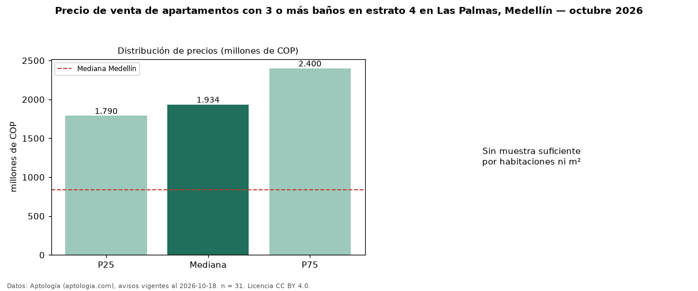

Precio de venta de apartamentos con 3 o más baños en estrato 4 en Las Palmas, Medellín — octubre 2026
Con 31 avisos vigentes, el precio mediano de apartamentos con 3 o más baños en estrato 4 en venta en Las Palmas, Medellín es COP 1,93 mil millones. Eso es 8 % más que la mediana de los apartamentos en estrato 4 en venta de Las Palmas (COP 1,79 mil millones, n = 46); este segmento reúne el 67 % de esos avisos. El área mediana anunciada es 145 m². El segmento con más oferta es el de 3 o más habitaciones (26 avisos, mediana COP 1,98 mil millones). La mediana de todos los apartamentos en venta de Medellín es COP 840 millones (+130 % de diferencia). La mitad central de los avisos va de COP 1,79 mil millones a COP 2,40 mil millones (razón 1,3), una dispersión baja. Datos: Aptología (aptologia.com), CC BY 4.0 — https://www.aptologia.com/venta/medellin/las-palmas. Archivos: PDF, CSV con las cifras y gráfica PNG.

| Avisos únicos | 31 |
|---|---|
| Percentil 25 | COP 1.789.745.876 |
| Mediana | COP 1.934.480.799 |
| Percentil 75 | COP 2.400.173.466 |
Fuente: avisos vigentes de portales inmobiliarios recopilados por Aptología, deduplicados (mínimo 30 avisos únicos por celda). Precios pedidos, no cerrados. Fecha: 2026-10-18.